4-Permanent Advantage - Weak Pawns for the Opponent
Steinitz's Advantages: 4-Permanent Advantage - Weak Pawns for the Opponent · 23 January 2019
It can be seen that Black has many weak pawns that White will like to target. White will also use the squares that have been weakened as outposts for his pieces.
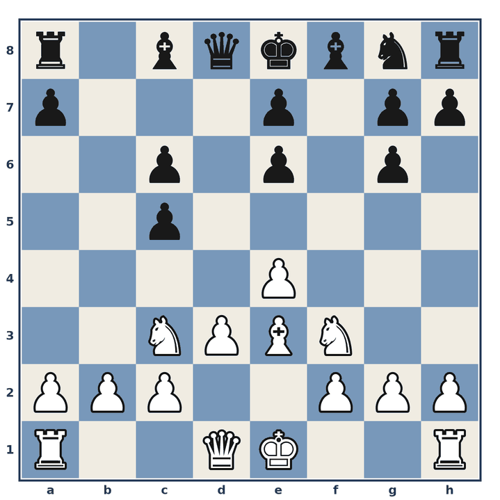
Position before 1.
1. ♘e5
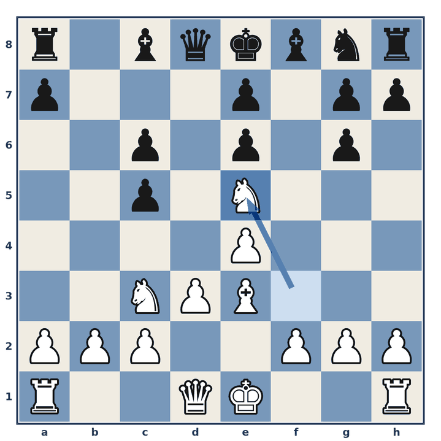
1… ♘f6
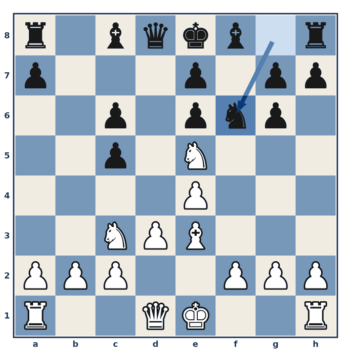
2. f4
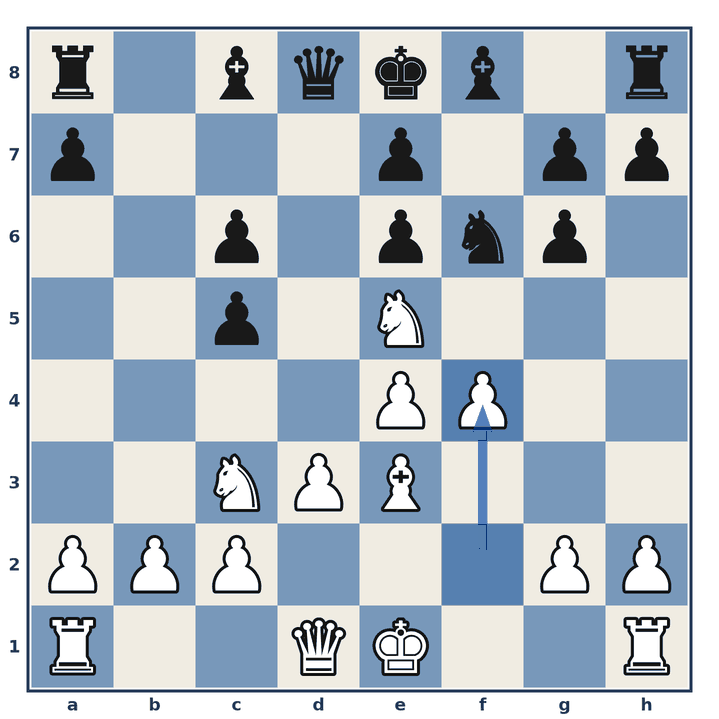
2… ♕c7
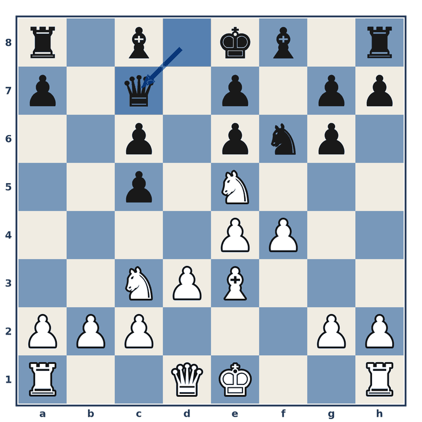
3. O-O
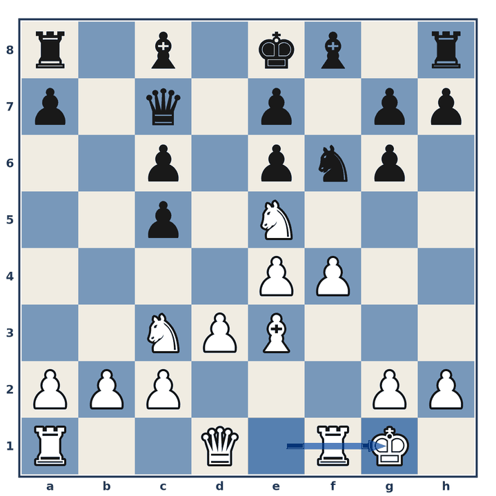
3… g5
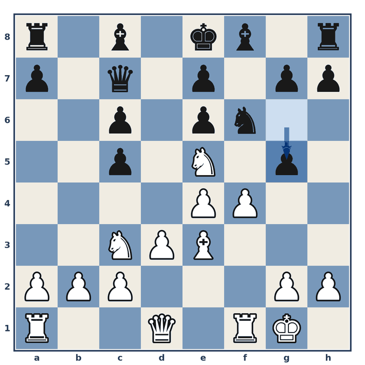
4. ♘c4
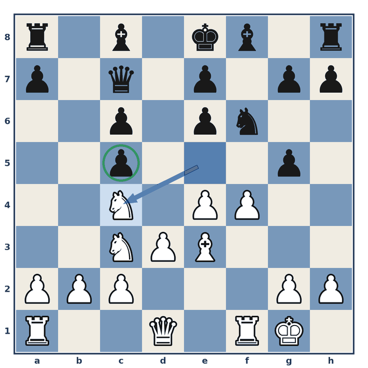
4… g4
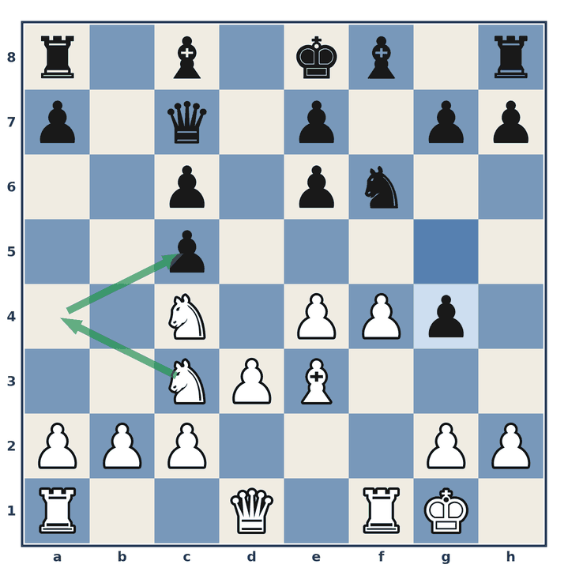
5. ♘a4
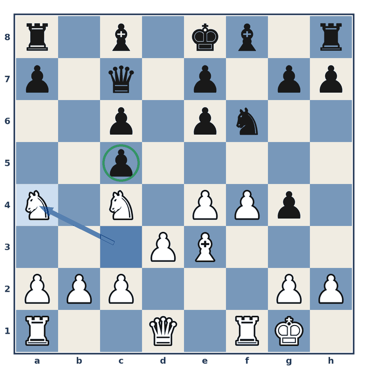
5… g6
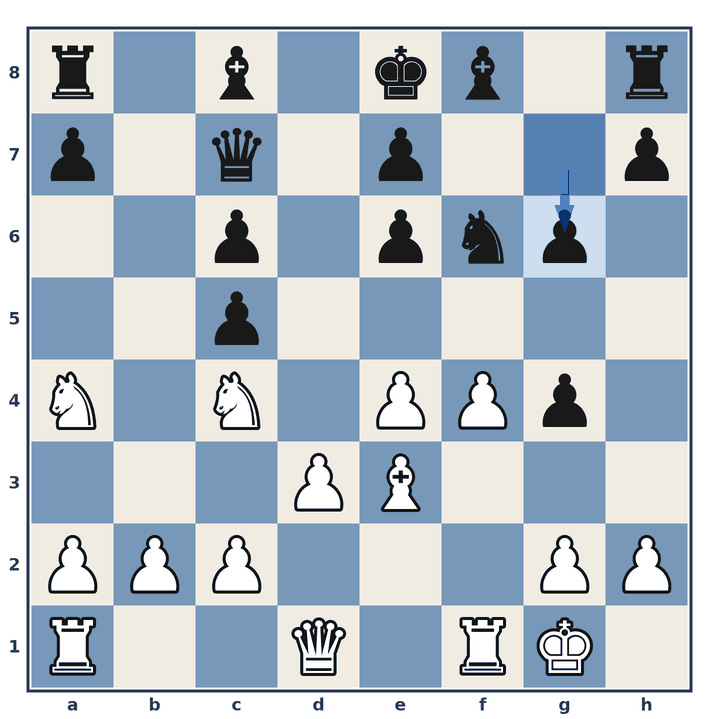
6. ♘xc5
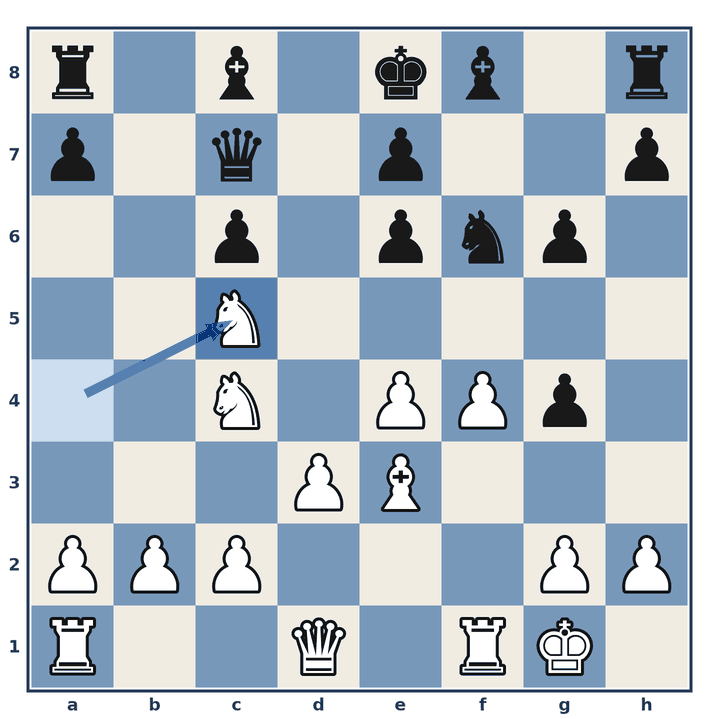
One of the weak pawns falls, and there is nothing that Black can do about it.